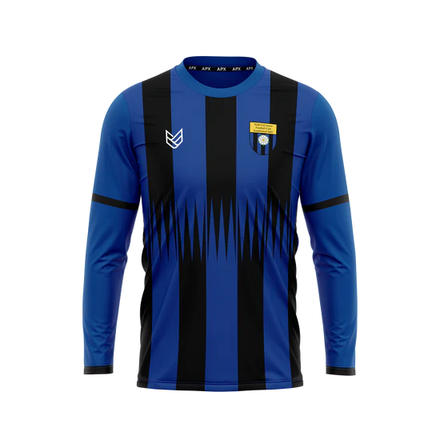

Club Shop
Club Shop
Our kit supplier has their own online shop that you can order direct from.
You only need to purchase a new kit if you are new to the club, your team has a new match kit sponsor, or if last season’s kit no longer fits.
If you have any questions about purchasing your kit from the supplier, ask your coach.

Sizing Information
To ensure the best fit, please consult our sizing chart, which you can view here: Sizing Guide.
Delivery
Orders placed with the supplier will be delivered direct to you. Delivery charges are calculated at checkout. Bulk orders of new match kit tops will be delivered to your coach for distribution.

Before You Order
You'll need to know the following:
- - Kit Size: You will need to know the size of the kit you want to order - see the sizing guide here
- - Squad Number: You'll need to know your allocated squad number to complete your purchase. If you're unsure of your squad number, please confirm with your coach before ordering. The Squad number needs to be added to the text box labeled 'INITIALS'. For Match Kit: Do NOT put initials in the box, just your squad number.
- - Sponsored Kits: If your team has an existing match kit sponsor from last season, you can order your match kit tops via the club shop as normal - just select your team's sponsor when ordering. Branding will be added to the front of your shirt.
- - New Sponsors: If your team has a new match kit sponsor, the initial purchase of match kit tops will be made in bulk by the club - your coach will ask you for your top size, so you don't need to order this yourself. You will still need to purchase any shorts or socks directly from the supplier. After this initial bulk order, if you need any additional tops (e.g. a replacement or a new player joining), these must be ordered directly from the supplier, making sure to select the correct sponsor.
For the attention of coaches: if your team has a new match kit sponsor this season, please see our Coach's Guidance for Ordering New Sponsored Match Kit for the process to follow.